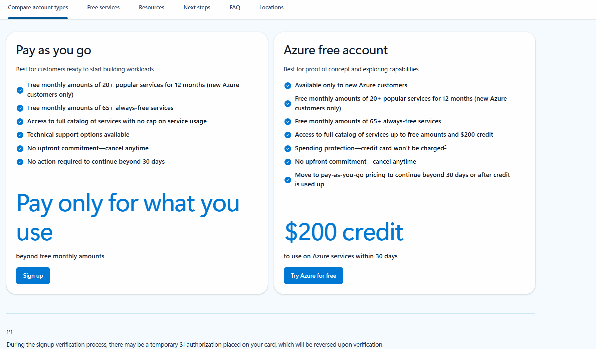
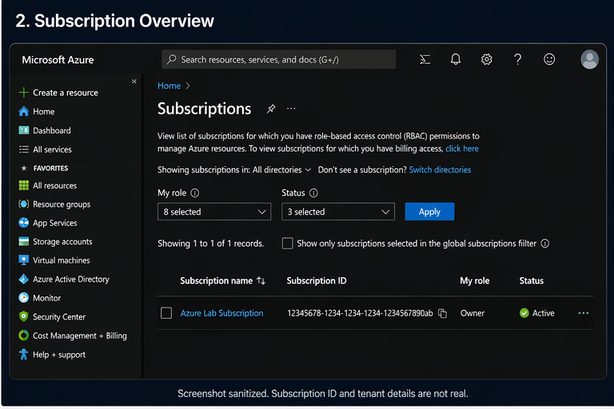
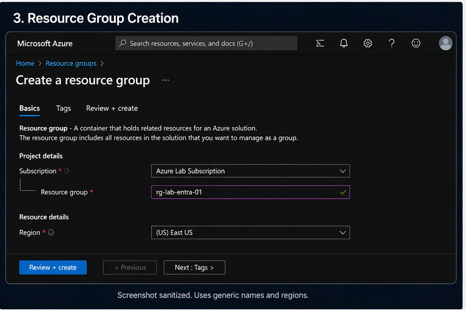
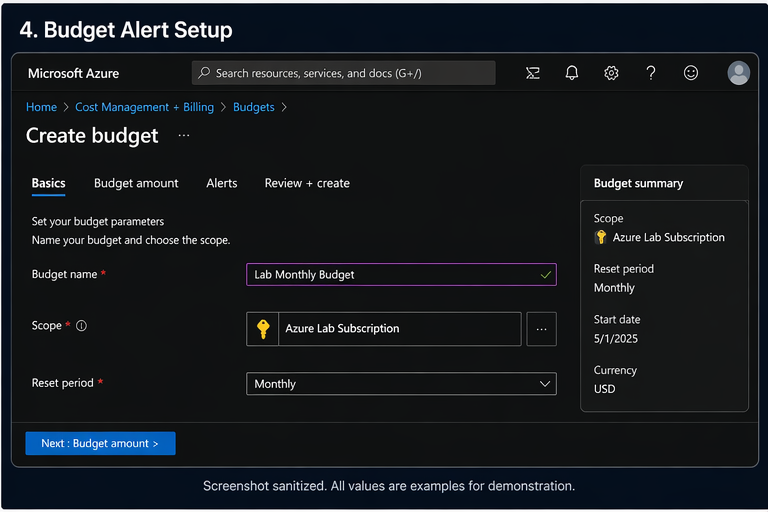

One of the easiest ways to make Azure labs frustrating or expensive is starting with the wrong account. This guide breaks down the safest option for beginners, how subscriptions work, what free tiers actually help, and how to avoid costs before they surprise you.
This is the first post in a practical Azure lab series built for people who want to move beyond certification study and start building real hands-on cloud security experience.
Even if you already have access to Microsoft 365, Entra ID, Azure subscriptions, or security tooling at work, your employer’s tenant should not be your practice environment.
A proper lab should be disposable, isolated, and fully under your control. That freedom is what lets you test, misconfigure, fix, rebuild, and actually learn.
For most people starting cloud security labs, the best path is a personal Microsoft account tied to a personal Azure subscription. This gives you full ownership of the environment and keeps your learning separate from work.
Best for getting started. Good for testing the portal, creating small resources, and learning the basics without committing to a large spend.
Best once you move beyond the initial free period. It works well if you stay disciplined with resource size, shutdown habits, and cleanup.
Some Azure services remain free or inexpensive within limited usage. This is ideal for lab repetition and small proof-of-concept builds.
Azure terminology can feel more complicated than it needs to be at first. For lab purposes, here is the simple version.
Azure is a great learning platform, but it is also very easy to leave something running and forget about it. Good cost habits are part of good lab design.
This section is designed for real Azure portal screenshots so readers can follow visually instead of only reading text. Replace the sample image paths below with your own screenshots once you capture them.
images folder and use simple names like
azure-signup.png, azure-subscription.png, and azure-budget.png.

Show the first sign-up or landing page and explain that this is where the lab journey begins. Call out that this should be a personal account, not a company-managed identity.

Show the subscription overview page and explain that this is the main billing boundary. This is a good place to introduce the idea of cost control before building resources.

Show the resource group creation page and explain why isolating each lab into its own group makes cleanup easier and safer.

Show where to create a budget in Cost Management. This is one of the most important screenshots in the post because it directly reduces mistakes.
Instead of making this a one-off post, it works better as the opening guide in a beginner-friendly Azure security lab track. That gives your site structure and gives readers a clear path forward.
Start here. Learn the safest account model, subscription basics, and how to control cost from the beginning.
Read Part 1Create a simple lab structure with a resource group, naming standard, region choice, and safe cleanup habits.
Coming nextBuild around users, roles, least privilege, and Entra ID concepts that actually matter in real environments.
Coming nextAdd the visibility layer with logs, workspaces, and the foundations needed for investigations and detections.
Coming nextThe best lab account is the one you fully control, can afford, and can destroy without consequences. That freedom is what turns cloud study into real cloud skill.
Start small. Keep it isolated. Add budget alerts early. Build only what helps you learn.